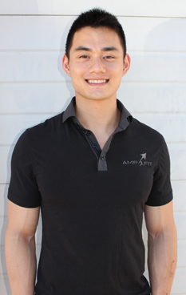
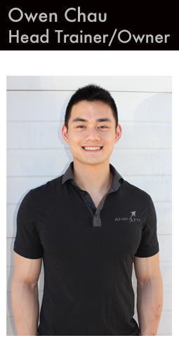
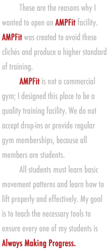

AMP Methodology
Movement followed by Strength. Our methods teach you how to apply these basic principles in whatever endeavor you choose.
Proper Movement is crucial for injury prevention and safe and effective strength training. At AMPFit, you must learn how to move, you must earn a proper foundation of movement. This principle applies through all domains of training and more importantly, all aspects of life.
When you have achieved a proper foundation of movement, the next step is improving your strength. A proper base of strength is now emphasized because it will aid you in reaching your individual goals. This will also help your body in preventing injuries.
Owen Chau
Head Trainer & Owner

I started as a martial artist who wanted to improve my skills and prevent injury. For this purpose, I decided to pursue basic strength training. I discovered that this was not only beneficial for athletes, but for the general population as well. This is what sparked my passion for teaching Movement and Strength.
I started working in commercial gyms for a number of years. There were a few things that I would always see: People that didn't respect the equipment, people that were on the treadmill aimlessly for hours on end, people that were stuck lifting the same weight for ages and with horrible, horrible form. In a commerical gym, these types of things are unavoidable.
These are the reasons why I wanted to open an AMPFit facility. AMPFit was created to avoid these clichés and produce a higher standard of training.
AMPFit is not a commercial gym; I designed this place to be a quality training facility. We do not accept drop-ins or provide regular gym memberships, because all members are students.
All students must learn basic movement patterns and learn how to lift properly and effectively. My goal is to teach the necessary tools to ensure every one of my students is Always Making Progress.
 